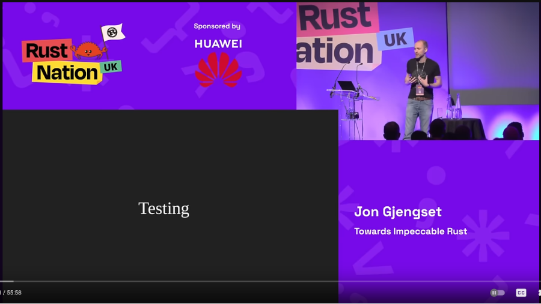

Chapter 6
Tim Heaney
2024-05-15
Agenda
Testing
- Review
- Rust for Rustaceans
Review
The Rust Programming Language
- chapter 11: Writing Automated Tests
- Rust Book Study Session video
- 2021-12-15
- lead by Krzysztof
Rust testing
- Unit testing
- Doc testing
- Integration testing
- Benchmark testing
Cargo generates "hello world" for a binary
❯ cargo new hello
Creating binary (application) `hello` package
hello/src/main.rs
fn main() {
println!("Hello, world!");
}
cargo run
❯ cd hello
❯ cargo run
Compiling hello v0.1.0 (/home/tim/tmp/hello)
Finished `dev` profile [unoptimized + debuginfo] target(s) in 0.18s
Running `/home/tim/rust/target/debug/hello`
Hello, world!
Cargo generates a test for a library
❯ cargo new adder --lib
Creating library `adder` package
adder/src/lib.rs
pub fn add(left: usize, right: usize) -> usize {
left + right
}
#[cfg(test)]
mod tests {
use super::*;
#[test]
fn it_works() {
let result = add(2, 2);
assert_eq!(result, 4);
}
}
cargo test
❯ cd adder
❯ cargo test
Finished `test` profile [unoptimized + debuginfo] target(s) in 0.00s
Running unittests src/lib.rs (/home/tim/rust/target/debug/deps/adder-8c81ce131dde6a16)
running 1 test
test tests::it_works ... ok
test result: ok. 1 passed; 0 failed; 0 ignored; 0 measured; 0 filtered out; finished in 0.00s
Doc-tests adder
running 0 tests
test result: ok. 0 passed; 0 failed; 0 ignored; 0 measured; 0 filtered out; finished in 0.00s
Macros
#[test],#[cfg(test)]assert!,assert_eq!, &c.#[ignore],#[should_panic], &c.
Rust 1.78 stabilized diagnostic attributes
#[diagnostic]
Unstable Rust has a bench attribute
#[bench]
exercism.org
- Programming exercises
- Test-based
- Has a Rust track
cargo test -- --include-ignored
Rust for Rustaceans

6. Testing
- Rust Testing Mechanisms
- Additional Testing Tools
- Summary
Rust Testing Mechanisms
- The Test Harness
#[cfg(test)]- Test-Only APIs
- Bookkeeping for Test Assertions
- Doctests
Additional Testing Tools
- Linting
- Test Generation
- Fuzzing
- Property-based testing
- Test Augmentation
- Performance Testing
- Performance Variance
- Compiler Optimizations
- I/O Overhead Measurement
Summary
Rust Testing Mechanisms
The Test Harness
look at adder again
pub fn add(left: usize, right: usize) -> usize {
left + right
}
#[cfg(test)]
mod tests {
use super::*;
#[test]
fn it_works() {
let result = add(2, 2);
assert_eq!(result, 4);
}
}
cargo expand
#![feature(prelude_import)]
#[prelude_import]
use std::prelude::rust_2021::*;
#[macro_use]
extern crate std;
pub fn add(left: usize, right: usize) -> usize {
left + right
}
cargo expand --lib --tests
#![feature(prelude_import)]
#[prelude_import]
use std::prelude::rust_2021::*;
#[macro_use]
extern crate std;
pub fn add(left: usize, right: usize) -> usize {
left + right
}
#[cfg(test)]
mod tests {
use super::*;
extern crate test;
#[cfg(test)]
#[rustc_test_marker = "tests::it_works"]
pub const it_works: test::TestDescAndFn = test::TestDescAndFn {
desc: test::TestDesc {
name: test::StaticTestName("tests::it_works"),
ignore: false,
ignore_message: ::core::option::Option::None,
source_file: "src/lib.rs",
start_line: 10usize,
start_col: 8usize,
end_line: 10usize,
end_col: 16usize,
compile_fail: false,
no_run: false,
should_panic: test::ShouldPanic::No,
test_type: test::TestType::UnitTest,
},
testfn: test::StaticTestFn(
#[coverage(off)]
|| test::assert_test_result(it_works()),
),
};
fn it_works() {
let result = add(2, 2);
match (&result, &4) {
(left_val, right_val) => {
if !(*left_val == *right_val) {
let kind = ::core::panicking::AssertKind::Eq;
::core::panicking::assert_failed(
kind,
&*left_val,
&*right_val,
::core::option::Option::None,
);
}
}
};
}
}
#[rustc_main]
#[coverage(off)]
pub fn main() -> () {
extern crate test;
test::test_main_static(&[&it_works])
}
The Test Harness
- the default test harness (libtest)
- can write our own test harness
in Cargo.toml
[[test]]
name = "custom"
path = "tests/custom.rs"
harness = false
Arguments to the default test harness
--help--nocapture--test-threads- Will have to implement these as well
Why use a custom (or no) test harness
- benchmarks
- fuzzers
- model checkers
- custom global set-up (e.g., WebAssembly)
#[cfg(test)]
- compilation context
- Caira mentioned last time in Chapter 5
- compiler configuration flag test
rustc --test
Mocking
- mocks and fakes
- database connections
- network connections
- generics
- dedicated struct
#[cfg(test)]#[cfg(feature = "test_mock_foo")]
Mocking
- no standard approach yet
- mockall crate
Test-Only APIs
- First, code that's only for testing
testing the hashbrown crate
#[test]
fn insert_just_one() {
let mut m = HashMap::new();
m.insert(42, ());
let full = m.table.buckets.iter().filter(Bucket::is_full).count();
assert_eq!(full, 1);
}
Private fields
- We are testing in
HashMap - So we can see
m.tableeven though it's private - But
RawTableis in another module - So we cannot see
m.table.buckets
Create an accessor just for testing
impl RawTable {
#[cfg(test)]
pub(crate) fn buckets(&self) -> &[Bucket] {
&self.buckets
}
}
Change test to call method
#[test]
fn insert_just_one() {
let mut m = HashMap::new();
m.insert(42, ());
let full = m.table.buckets().iter().filter(Bucket::is_full).count();
assert_eq!(full, 1);
}
Bookkeeping for Test Assertions
- Second, data that's only for testing
keep track of writes
struct BufWriter<T> {
#[cfg(test)]
write_through: usize,
// other fields ...
}
keep track of writes
struct BufWriter<T> {
#[cfg(test)]
write_through: usize,
// other fields ...
}
impl<T: Write> Write for BufWriter<T> {
fn write(&mut self, buf: &[u8]) -> Result<usize> {
// ...
if self.full() {
#[cfg(test)]
self.write_through += 1;
let n = self.inner.write(&self.buffer[..])?;
}
}
}
Doctests
Docstring for function
/// Completely frobnifies a number through I/O.
///
pub fn frobnify(i: usize) -> std::io::Result<()> {
if i == 0 {
return Ok(());
}
Err(std::io::Error::new(std::io::ErrorKind::Other, "error"))
}
Add code in triple backticks
/// Completely frobnifies a number through I/O.
///
/// ```
/// # use mylib::frobnify;
/// # let unfrobnified_number = 0;
/// # let already_frobnified = 1;
/// assert!(frobnify(unfrobnified_number).is_ok());
/// assert!(frobnify(already_frobnified).is_err());
/// ```
pub fn frobnify(i: usize) -> std::io::Result<()> {
if i == 0 {
return Ok(());
}
Err(std::io::Error::new(std::io::ErrorKind::Other, "error"))
}
Everything in backticks is Rust code
- automatically run as doctests
- integration tests
- no private fields or methods
testis not set on main
- each test gets its own
fn main- (can opt out of this)
Must use the function you're testing
- Can hide code with #
/// # use mylib::frobnify;
Results
/// Here's an example that uses ? on multiple types
/// and thus needs to declare the concrete error type,
/// but we don't want to distract the user with that.
/// we also hide the use that brings the function into scope.
/// ```
/// # use mylib::frobnify;
/// # let unfrobnified_number = 0;
/// frobnify("0".parse()?)?;
/// # Ok::<(), anyhow::Error>(())
/// ```
This example depends on anyhow
- Cargo.toml
[dev-dependencies]
anyhow = "1.0"
Block comments
/// You could even replace an entire block of code completely,
/// though use this _very_ sparingly.
/// ```
/// # use mylib::frobnify;
/// # /*
/// let i = ...;
/// # */
/// # let i = 42;
/// frobnify(i)?;
/// # Ok::<(), anyhow::Error>(())
/// ```
Irony!
NOTE: Use this feature with care; it can be frustrating to users if they copy-paste an example and then it doesn't work because of required steps that you've hidden.
Attributes
should_panic,ignore,no_run- This code should fail to compile
/// ```compile_fail
/// # struct MyNonSendType(std::rc::Rc<()>);
/// fn is_send<T: Send>() {}
/// is_send::<MyNonSendType>();
/// ```
Additional Testing Tools
Linting
- clippy
- correctness lints
- other lints
- rustc
- warnings
- (correctness lints are "errors")
rustc -W help
rustc warnings
- Not all are on by default!
rust_2018_idiomsmissing_docs- public, but no docstring
missing_debug_implementations- public, but no
Debug
- public, but no
rustc warnings
- enable warning
#![warn(missing_docs)]
- convert warning to error
#![deny(missing_docs)]
Test Generation
- Fuzzing
- cargo-fuzz
- libfuzzer-sys (LLVM's libFuzzer)
- Property-Based Testing
QuickCheck
QuickCheck
- by Koen Claessen and John Hughes
- originated in Haskell in 1999
- John Hughes talks on quickcheck
- shrinking!
Paul Cipher
use proptest::prelude::*;
proptest! {
#[test]
// r"\PC*" is a regex which generates a string of arbitrary non-control characters.
fn encode_then_decode(s in r"\PC*") {
prop_assert_eq!(decode(&encode(&s)), s.to_ascii_uppercase());
}
}
proptest => unit test
#[test]
fn test_encode() {
assert_eq!(encode(""), "");
assert_eq!(encode("a"), "A");
assert_eq!(encode("hello"), "HMQXA");
assert_eq!(encode("newsletter"), "NSBPEQYNYW");
assert_eq!(encode("1 hug"), "1 HCB");
// proptest found this one!
assert_eq!(encode("z"), "Z");
}
fuzzing =~ property-based testing
If this approach of generating inputs until some condition is met sounds a lot like fuzzing, that's because it is— smarter people than I have argued that fuzzing is "just" property-based testing where the property you're testing for is "it doesn't crash."
Testing Sequences of Operations
- not limited to a single function call
- can test, say, a whole
Vec<Operation> - minimizers can still find the smallest sequence
Test Augmentation
- difficult to test for rare failures
- only if on different threads
- UB in
unsafecode
- could try repeating test
Test Augmentation
- Miri
- mid-level intermediate representation (MIR)
- Loom
- CDSChecker: Checking Concurrent Data Structures Written with C/C++ Atomics
Miri
- rustup +nightly component add miri
- cargo +nightly miri test
- cargo +nightly miri run
Miri
fn main() {
let mut x = 42;
let x: *mut i32 = &mut x;
let (x1, x2) = unsafe { (&mut *x, &mut *x) };
println!("{} {}", x1, x2);
}
Miri
❯ cargo +nightly run
Compiling use-miri v0.1.0 (/home/tim/rust/use-miri)
Finished `dev` profile [unoptimized + debuginfo] target(s) in 0.34s
Running `/home/tim/rust/target/debug/use-miri`
42 42
Miri
❯ cargo +nightly miri run
Preparing a sysroot for Miri (target: x86_64-unknown-linux-gnu)... done
Compiling use-miri v0.1.0 (/home/tim/rust/use-miri)
Finished `dev` profile [unoptimized + debuginfo] target(s) in 0.03s
Running `/home/tim/.rustup/toolchains/nightly-x86_64-unknown-linux-gnu/bin/cargo-miri runner /home/tim/rust/target/miri/x86_64-unknown-linux-gnu/debug/use-miri`
error: Undefined Behavior: trying to retag from <2377> for Unique permission at alloc1137[0x0], but that tag does not exist in the borrow stack for this location
--> src/main.rs:4:29
|
4 | let (x1, x2) = unsafe { (&mut *x, &mut *x) };
| ^^^^^^^^^^^^^^^^^^
| |
| trying to retag from <2377> for Unique permission at alloc1137[0x0], but that tag does not exist in the borrow stack for this location
| this error occurs as part of retag (of a reference/box inside this compound value) at alloc1137[0x0..0x4]
| errors for retagging in fields are fairly new; please reach out to us (e.g. at <https://rust-lang.zulipchat.com/#narrow/stream/269128-miri>) if you find this error troubling
|
= help: this indicates a potential bug in the program: it performed an invalid operation, but the Stacked Borrows rules it violated are still experimental
= help: see https://github.com/rust-lang/unsafe-code-guidelines/blob/master/wip/stacked-borrows.md for further information
help: <2377> was created by a Unique retag at offsets [0x0..0x4]
--> src/main.rs:4:30
|
4 | let (x1, x2) = unsafe { (&mut *x, &mut *x) };
| ^^^^^^^
help: <2377> was later invalidated at offsets [0x0..0x4] by a Unique retag
--> src/main.rs:4:39
|
4 | let (x1, x2) = unsafe { (&mut *x, &mut *x) };
| ^^^^^^^
= note: BACKTRACE (of the first span):
= note: inside `main` at src/main.rs:4:29: 4:47
note: some details are omitted, run with `MIRIFLAGS=-Zmiri-backtrace=full` for a verbose backtrace
error: aborting due to 1 previous error
Performance Testing
- Performance Variance
- Compiler Optimizations
- I/O Overhead Measurement
Performance Variance
- hdrhistogram (high dynamic range histogram)
- port of HdrHistogram Java library
- criterion
- cargo bench
$PROJECT/benches
Compiler Optimizations
- godbolt.org ("Compiler Explorer")
cargo-asmcargo-show-asm- command is still "cargo asm"
std::hint::black_box- stabilized in version 1.66 (2022-12-15)
cargo-show-asm
cargo install cargo-show-asm
cargo-show-asm
pub fn vec_push() {
let mut vs = Vec::with_capacity(4);
let start = std::time::Instant::now();
for i in 0..4 {
vs.push(i);
}
println!("took {:?}", start.elapsed());
}
cargo-show-asm
cargo asm vec_push
.section .text.mylib::vec_push,"ax",@progbits
.globl mylib::vec_push
.p2align 4, 0x90
.type mylib::vec_push,@function
mylib::vec_push:
.cfi_startproc
sub rsp, 104
.cfi_def_cfa_offset 112
mov rax, qword ptr [rip + __rust_no_alloc_shim_is_unstable@GOTPCREL]
movzx eax, byte ptr [rax]
call qword ptr [rip + std::time::Instant::now@GOTPCREL]
mov qword ptr [rsp + 8], rax
mov dword ptr [rsp + 16], edx
lea rdi, [rsp + 8]
call qword ptr [rip + std::time::Instant::elapsed@GOTPCREL]
mov qword ptr [rsp + 40], rax
mov dword ptr [rsp + 48], edx
lea rax, [rsp + 40]
mov qword ptr [rsp + 24], rax
mov rax, qword ptr [rip + <core::time::Duration as core::fmt::Debug>::fmt@GOTPCREL]
mov qword ptr [rsp + 32], rax
lea rax, [rip + .L__unnamed_1]
mov qword ptr [rsp + 56], rax
mov qword ptr [rsp + 64], 2
mov qword ptr [rsp + 88], 0
lea rax, [rsp + 24]
mov qword ptr [rsp + 72], rax
mov qword ptr [rsp + 80], 1
lea rdi, [rsp + 56]
call qword ptr [rip + std::io::stdio::_print@GOTPCREL]
add rsp, 104
.cfi_def_cfa_offset 8
ret
======================= Additional context =========================
.section .rodata..L__unnamed_2,"a",@progbits
.ascii "took "
.size .L__unnamed_2, 5
.section .rodata..L__unnamed_3,"a",@progbits
.byte 10
.size .L__unnamed_3, 1
.section .data.rel.ro..L__unnamed_1,"aw",@progbits
.p2align 3, 0x0
.quad .L__unnamed_2
.asciz "\005\000\000\000\000\000\000"
.quad .L__unnamed_3
.asciz "\001\000\000\000\000\000\000"
.size .L__unnamed_1, 32
black_box
use std::hint::black_box;
pub fn vec_push() {
let mut vs = Vec::with_capacity(4);
let start = std::time::Instant::now();
for i in 0..4 {
black_box(vs.as_ptr());
vs.push(i);
black_box(vs.as_ptr());
}
println!("took {:?}", start.elapsed());
}
black_box asm
.section .text.mylib::vec_push,"ax",@progbits
.globl mylib::vec_push
.p2align 4, 0x90
.type mylib::vec_push,@function
mylib::vec_push:
.cfi_startproc
.cfi_personality 155, DW.ref.rust_eh_personality
.cfi_lsda 27, .Lexception0
push r14
.cfi_def_cfa_offset 16
push rbx
.cfi_def_cfa_offset 24
sub rsp, 104
.cfi_def_cfa_offset 128
.cfi_offset rbx, -24
.cfi_offset r14, -16
mov rax, qword ptr [rip + __rust_no_alloc_shim_is_unstable@GOTPCREL]
movzx eax, byte ptr [rax]
mov edi, 16
mov esi, 4
call qword ptr [rip + __rust_alloc@GOTPCREL]
test rax, rax
je .LBB0_6
mov rbx, rax
call qword ptr [rip + std::time::Instant::now@GOTPCREL]
mov qword ptr [rsp + 56], rax
mov dword ptr [rsp + 64], edx
mov qword ptr [rsp + 8], rbx
lea rax, [rsp + 8]
#APP
#NO_APP
mov dword ptr [rbx], 0
mov qword ptr [rsp + 8], rbx
lea rcx, [rsp + 8]
#APP
#NO_APP
mov qword ptr [rsp + 8], rbx
#APP
#NO_APP
mov dword ptr [rbx + 4], 1
mov qword ptr [rsp + 8], rbx
#APP
#NO_APP
mov qword ptr [rsp + 8], rbx
#APP
#NO_APP
mov dword ptr [rbx + 8], 2
mov qword ptr [rsp + 8], rbx
#APP
#NO_APP
mov qword ptr [rsp + 8], rbx
#APP
#NO_APP
mov dword ptr [rbx + 12], 3
mov qword ptr [rsp + 8], rbx
#APP
#NO_APP
lea rdi, [rsp + 56]
call qword ptr [rip + std::time::Instant::elapsed@GOTPCREL]
mov qword ptr [rsp + 88], rax
mov dword ptr [rsp + 96], edx
lea rax, [rsp + 88]
mov qword ptr [rsp + 72], rax
mov rax, qword ptr [rip + <core::time::Duration as core::fmt::Debug>::fmt@GOTPCREL]
mov qword ptr [rsp + 80], rax
lea rax, [rip + .L__unnamed_1]
mov qword ptr [rsp + 8], rax
mov qword ptr [rsp + 16], 2
mov qword ptr [rsp + 40], 0
lea rax, [rsp + 72]
mov qword ptr [rsp + 24], rax
mov qword ptr [rsp + 32], 1
lea rdi, [rsp + 8]
call qword ptr [rip + std::io::stdio::_print@GOTPCREL]
mov esi, 16
mov edx, 4
mov rdi, rbx
call qword ptr [rip + __rust_dealloc@GOTPCREL]
add rsp, 104
.cfi_def_cfa_offset 24
pop rbx
.cfi_def_cfa_offset 16
pop r14
.cfi_def_cfa_offset 8
ret
.LBB0_6:
.cfi_def_cfa_offset 128
mov edi, 4
mov esi, 16
call qword ptr [rip + alloc::alloc::handle_alloc_error@GOTPCREL]
mov r14, rax
mov esi, 16
mov edx, 4
mov rdi, rbx
call qword ptr [rip + __rust_dealloc@GOTPCREL]
mov rdi, r14
call _Unwind_Resume@PLT
======================= Additional context =========================
.section .rodata..L__unnamed_2,"a",@progbits
.ascii "took "
.size .L__unnamed_2, 5
.section .rodata..L__unnamed_3,"a",@progbits
.byte 10
.size .L__unnamed_3, 1
.section .data.rel.ro..L__unnamed_1,"aw",@progbits
.p2align 3, 0x0
.quad .L__unnamed_2
.asciz "\005\000\000\000\000\000\000"
.quad .L__unnamed_3
.asciz "\001\000\000\000\000\000\000"
.size .L__unnamed_1, 32
I/O Overhead Measurement
let start = std::time::Instant::now();
for i in 0..1_000_000 {
println!("iteration {}", i);
my_function();
}
println!("took {:?}", start.elapsed());
Summary
- Rust's built-in testing capabilities
- Testing facilities and techniques
- Last chapter on higher-level aspects
- Starting with chapter 7, dive deeper into Rust code
Thanks!

- @oylenshpeegul@mastodon.social
- oylenshpeegul@proton.me